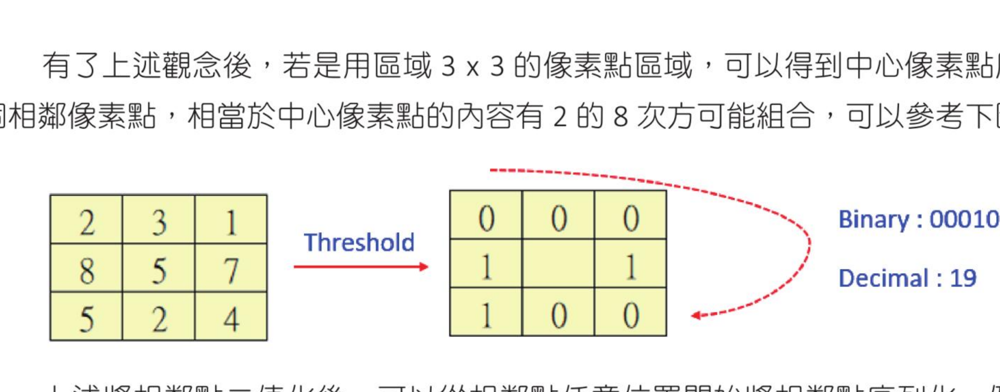
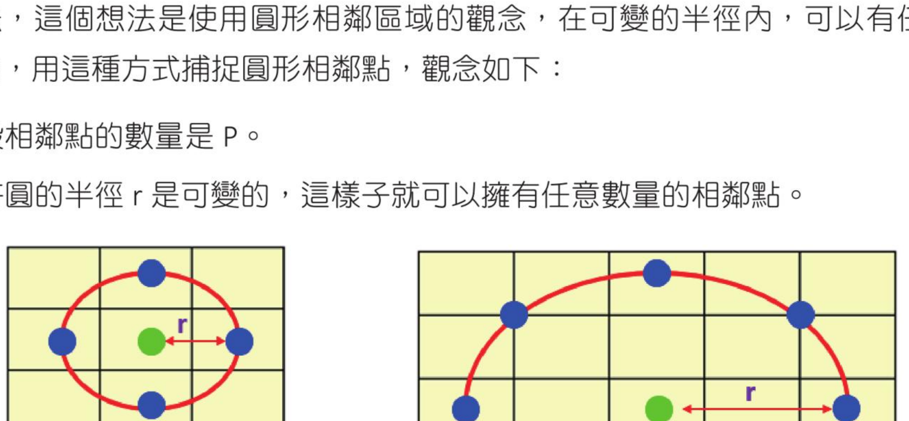
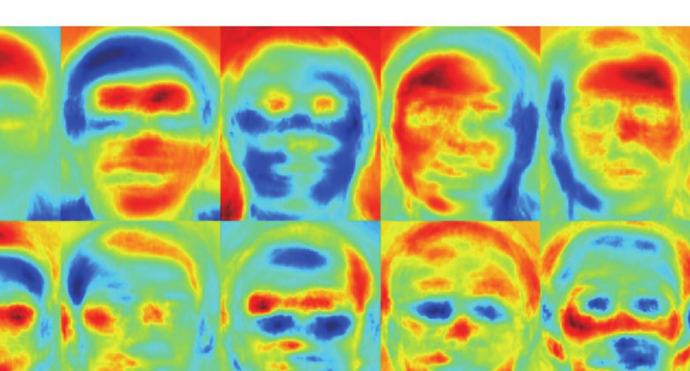

第 29 章
人脸辨识
LBPH 人脸辨识 · Eigenfaces 人脸辨识 · Fisherfaces 人脸辨识 · 建立员工人脸识别登入系统
笔者曾经在 Python 入门书中使用简单的 histogram() 方法执行人脸辨识，本章将介绍 OpenCV 主要使用的人脸辨识方法。方法有 3 种：LBPH 人脸辨识、Fisherfaces 人脸辨识、Eigenfaces 人脸辨识。每一种辨识方法采用的演算法不一样，不过步骤观念相同：建立辨识器、训练辨识器、执行辨识。
要执行本章程式必须安装扩展模组，可以使用下列方式安装 Python 套件，更多细节请参考附录 A。
pip install opencv-contrib-python
29-1
LBPH 人脸辨识
LBPH 的全名是 Local Binary Pattern Histogram，中文可以翻译为区域二值模式直方图，主要是使用区域（或称局部）的纹理特征完成人脸辨识。
要辨识的人脸必须有相同的大小。当读者要用人脸相片做测试时，可以使用 ch28_1.py 先将人脸撷取储存。
29-1-1 LBPH 原理解说
这是一个从影像提取局部特征的方法，起源于 2D 纹理分析。基本思维是将每个像素点与其相邻的像素点做比较，然后构成影像点的局部结构。方法以像素点中心的强度当作阈值，并对其相邻的像素点设定值。
如果相邻像素点的强度大于或等于阈值，相邻像素点值是 1；如果相邻像素点的强度小于阈值，相邻像素点值是 0。

使用 3×3 的像素区域时，中心像素点周围有 8 个相邻像素点；图中二值序列可换算成十进制值 19。
只要对影像所有其他像素点用相同方式处理，就可以得到影像的特征图，这个特征图的直方图又称 LBPH 直方图。
固定的相邻区域无法对规模不同的细节进行编码，因此可以使用圆形相邻区域观念。在可变半径内，可以有任意数量的相邻点。

例如左图可用 (4, 1) 表示，右图可用 (8, 2) 表示；无法精确取得像素点时，可使用插值法处理。
至于影像辨识，可以用计算两个直方图的距离当作影像的差异，最常用的是欧几里德距离。影像比对结果值越小，代表彼此越相似。
29-1-2 LBP 函数解说
OpenCV 提供 3 个函数执行人脸辨识：face.LBPHFaceRecognizer_create() 建立 LBPH 人脸辨识物件；recognizer.train() 训练人脸辨识；recognizer.predict() 执行人脸辨识。
建立人脸辨识物件
recognizer = cv2.face.LBPHFaceRecognizer_create(radius, neighbors,
grid_x, grid_y, threshold)
| 参数 | 说明 |
|---|
radius | 可选参数，圆形局部的半径，预设是 1，建议使用预设值。 |
neighbors | 可选参数，圆形局部的相邻点个数，预设是 8，建议使用预设值。 |
grid_x | 可选参数，每个单元格在水平方向的格数，预设是 8。 |
grid_y | 可选参数，每个单元格在垂直方向的格数，预设是 8。 |
threshold | 可选参数，人脸辨识时使用的阈值，建议使用预设值。 |
训练人脸辨识
recognizer.train(src, labels)
| 参数 | 说明 |
|---|
src | 用来学习的人脸影像，也可以称是人脸影像样本。 |
labels | 人脸影像样本对应的标签。 |
执行人脸辨识
label, confidence = recognizer.predict(src)
| 项目 | 说明 |
|---|
src | 需要辨识的人脸影像。 |
label | 与样本匹配最高的标签索引值。 |
confidence | 匹配度评分。如果是 0 代表完全相同；大于 0 但是小于 50，代表匹配程度可以接受；如果大于 80，代表匹配程度比较差。 |
29-1-3 简单的人脸辨识程式实作
这一节将对下列人脸影像做辨识。最左边是待辨识的脸 face.jpg，然后有 2 组人脸，分别是 hung 和 star。在实务上建议至少建立 10 组人脸当作样本人脸，未来辨识度会更精确。
程式实例 ch29_1.py：执行人脸辨识匹配，最后列出最相近的人脸，同时列出此人脸的名称。
# ch29_1.py
import cv2
import numpy as np
face_db = [] # 建立空串列
face_db.append(cv2.imread("ch29_1\\hung1.jpg", cv2.IMREAD_GRAYSCALE))
face_db.append(cv2.imread("ch29_1\\hung2.jpg", cv2.IMREAD_GRAYSCALE))
face_db.append(cv2.imread("ch29_1\\star1.jpg", cv2.IMREAD_GRAYSCALE))
face_db.append(cv2.imread("ch29_1\\star2.jpg", cv2.IMREAD_GRAYSCALE))
labels = [0, 0, 1, 1] # 建立标签串列
faceNames = {"0": "Hung", "1": "Unistar"} # 建立对应名字的字典
recognizer = cv2.face.LBPHFaceRecognizer_create() # 建立人脸辨识物件
recognizer.train(face_db, np.array(labels)) # 训练人脸辨识
# 读取要辨识的人脸
face = cv2.imread("ch29_1\\face.jpg", cv2.IMREAD_GRAYSCALE)
label, confidence = recognizer.predict(face) # 执行人脸辨识
print(f"Name = {faceNames[str(label)]}")
print(f"Confidence = {confidence:6.2f}")
==================== RESTART: D:/OpenCV_Python/ch29/ch29_1.py ====================
Name = Unistar
Confidence = 53.96
这章内容是基本的人脸识别教材。在实务上，一个人的样本数据最好有各种光照条件、背景场景和面部表情，这对于训练数据集更有帮助。
29-1-4 绘制 LBPH 直方图
OpenCV 有提供 getHistograms() 函数可以绘制 LBPH 直方图，可以使用 LBPH 人脸辨识物件调用。
程式实例 ch29_1_1.py：绘制人脸 hung1.jpg 的直方图。
# ch29_1_1.py
import cv2
import numpy as np
import matplotlib.pyplot as plt
image = cv2.imread("ch29_1\\hung1.jpg", cv2.IMREAD_COLOR) # 彩色读取
img = cv2.cvtColor(image, cv2.COLOR_BGR2RGB) # 转 RGB
plt.subplot(121)
plt.imshow(img) # 显示人脸
gray = cv2.cvtColor(image, cv2.COLOR_BGR2GRAY) # 转灰阶
recognizer = cv2.face.LBPHFaceRecognizer_create() # 建立人脸辨识物件
recognizer.train([gray], np.array([0])) # 训练人脸辨识
histograms = recognizer.getHistograms()
histogram = histograms[0][0]
axis_values = np.array([i for i in range(0, len(histogram))])
plt.subplot(122)
plt.bar(axis_values, histogram)
plt.show()
下方中间的图是 ch29_1_2.py 的执行结果，所读取的是 star1.jpg 的人脸直方图；右边的图是 ch29_1_3.py 的执行结果，所读取的是待辨识人脸 face.jpg 的直方图。可以比较发现，face.jpg 的直方图与 star1.jpg 的直方图比较类似。
29-1-5 人脸识别实务：储存与开启训练数据
在实务上，当人脸资料量很多时，如果每一次都要重新训练数据是一件麻烦的事。这时可以将训练好的人脸数据模型储存，未来需要做人脸辨识时，再开启训练数据。
储存人脸辨识数据可以使用 save(filename) 函数，其中参数 filename 可以使用 xml 或 yml 当作副档名。
程式实例 ch29_2.py：使用与 ch29_1.py 相同的人脸数据，然后用 model.yml 储存已经训练好的人脸辨识数据。
# ch29_2.py
import cv2
import numpy as np
face_db = ["ch29_2\\hung1.jpg",
"ch29_2\\hung2.jpg",
"ch29_2\\star1.jpg",
"ch29_2\\star2.jpg"]
faces = [] # 人脸空串列
for f in face_db:
img = cv2.imread(f, cv2.IMREAD_GRAYSCALE) # 读取人脸资料库
faces.append(img) # 加入人脸空串列
labels = np.array([i for i in range(0, len(faces))]) # 建立标签串列
model = cv2.face.LBPHFaceRecognizer_create() # 建立人脸辨识物件
model.train(faces, np.array(labels)) # 训练人脸辨识
model.save("ch29_2\\model.yml") # 储存训练的人脸数据
print("储存训练数据完成")
==================== RESTART: D:\OpenCV_Python\ch29\ch29_2.py ====================
储存训练数据完成
在 ch29\ch29_2 资料夹可以看到所储存的训练数据模型。
程式实例 ch29_3.py：开启已经储存的人脸辨识数据模型，然后读取 face.jpg 执行匹配。
# ch29_3.py
import cv2
faceNames = {"0": "Hung", "1": "Hung", "2": "Unistar", "3": "Unistar"} # 建立对应名字的字典
model = cv2.face.LBPHFaceRecognizer_create() # 建立人脸辨识物件
model.read("ch29_2\\model.yml") # 读取人脸辨识数据模型
# 读取要辨识的人脸
face = cv2.imread("ch29_2\\face.jpg", cv2.IMREAD_GRAYSCALE)
label, confidence = model.predict(face) # 执行人脸辨识
print(f"Name = {faceNames[str(label)]}")
print(f"Confidence = {confidence:6.2f}")
==================== RESTART: D:/OpenCV_Python/ch29/ch29_3.py ====================
Name = Unistar
Confidence = 53.96
29-2
Eigenfaces 人脸辨识
Eigenfaces 处理人脸通常也可以称为特征脸，主要是使用主成份分析（Principal Component Analysis，简称 PCA），将所有训练数据从高维降为低维，然后抛弃无关紧要的部分，使用具有代表性的有用特征，再进行分析与处理，最后用这些特征得到人脸辨识结果。
29-2-1 Eigenfaces 原理解说
这个演算法主要考量并非人脸所有部分对于人脸识别同等重要。事实上，当我们看一个人时，通常会用此人的独特特征识别此人，例如前额、眼睛、鼻子、口部、脸颊。也就是说，可以关注哪些区域有最大的变化，例如从前额到眼睛、从眼睛到鼻子、从鼻子到嘴巴的变化。
在应用 Eigenfaces 时，主要观念是将所有人的所有训练影像当作一个整体。方法是将每一个人脸用降维方式处理成一维向量。如果人脸影像宽与高皆是 m，可以展开成 m×m 的一维向量。
然后尝试提取相关和有用的部分，同时抛弃其余部分，这些有用的部分称为主成份。所谓主成份在人脸识别中也可以称为高变化区域、有用特征或方差。

影像来源在原书中标注为 OpenCV 文件：docs.opencv.org 的 face tutorial。
每当有新的影像时，Eigenfaces 会从新的影像中提取主成份，将这些主成份与训练数据集的元素列做比较，找出最匹配，并回传最匹配的关联标签。
29-2-2 Eigenfaces 函数解说
OpenCV 提供 3 个函数执行人脸辨识：face.EigenFaceRecognizer_create() 建立 Eigenfaces 人脸辨识物件；recognizer.train() 训练人脸辨识；recognizer.predict() 执行人脸辨识。
建立人脸辨识物件
recognizer = cv2.face.EigenFaceRecognizer_create(num_components, threshold)
| 参数 | 说明 |
|---|
num_components | 可选参数，主要是 PCA 方法中要保留的分量个数，建议使用预设值。 |
threshold | 可选参数，人脸辨识时使用的阈值，建议使用预设值。 |
recognizer.train(src, labels) 的 src 是用来学习的人脸影像样本，labels 是对应标签。recognizer.predict(src) 会回传 label 与 confidence。Eigenfaces 的匹配度评分值范围在 0～20000 之间，如果是 0 代表完全相同；大于 0 但小于 5000，代表匹配程度可以接受。
29-2-3 简单的人脸辨识程式实作
程式实例 ch29_4.py：使用 Eigenfaces 方法，重新设计 ch29_1.py 执行人脸辨识。
# ch29_4.py
import cv2
import numpy as np
face_db = [] # 建立空串列
face_db.append(cv2.imread("ch29_1\\hung1.jpg", cv2.IMREAD_GRAYSCALE))
face_db.append(cv2.imread("ch29_1\\hung2.jpg", cv2.IMREAD_GRAYSCALE))
face_db.append(cv2.imread("ch29_1\\star1.jpg", cv2.IMREAD_GRAYSCALE))
face_db.append(cv2.imread("ch29_1\\star2.jpg", cv2.IMREAD_GRAYSCALE))
labels = [0, 0, 1, 1] # 建立标签串列
faceNames = {"0": "Hung", "1": "Unistar"} # 建立对应名字的字典
# 使用 EigenFaceRecognizer
recognizer = cv2.face.EigenFaceRecognizer_create() # 建立人脸辨识物件
recognizer.train(face_db, np.array(labels)) # 训练人脸辨识
# 读取要辨识的人脸
face = cv2.imread("ch29_1\\face.jpg", cv2.IMREAD_GRAYSCALE)
label, confidence = recognizer.predict(face) # 执行人脸辨识
print("使用 Eigenfaces 方法执行人脸辨识")
print(f"Name = {faceNames[str(label)]}")
print(f"Confidence = {confidence:6.2f}")
==================== RESTART: D:/OpenCV_Python/ch29/ch29_4.py ====================
使用 Eigenfaces 方法执行人脸辨识
Name = Unistar
Confidence = 2198.34
29-3
Fisherfaces 人脸辨识
Fisherface 人脸辨识可以说是 Eigenfaces 演算法的改良版本。这个演算法最早由英国统计学家 Ronald Aylmer Fisher（1890 年 2 月 17 日～1962 年 7 月 29 日）发表，这也是演算法名称的由来。
29-3-1 Fisherfaces 原理解说
主成份分析（PCA）是 Eigenfaces 方法的核心，这个方法会一次查看所有人的所有训练脸，并从这些人中找到主成份，最后从这些组合提取主成份。这个方法关注的不是一个人的特征，而是代表训练数据所有人的特征。
这个方法的缺点是具有急剧变化的影像，例如光线变化，不是有用的人脸特征，但可能会主导其余影像。Fisherfaces 演算法不是提取代表所有人脸的有用特征，而是提取区分一个人与其他人的有用特征，所以可防止一个人的特征成为主导。
29-3-2 Fisherfaces 函数解说
OpenCV 提供 3 个函数执行人脸辨识：face.FisherFaceRecognizer_create() 建立 Fisherfaces 人脸辨识物件；recognizer.train() 训练人脸辨识；recognizer.predict() 执行人脸辨识。
建立人脸辨识物件
recognizer = cv2.face.FisherFaceRecognizer_create(num_components, threshold)
| 参数 | 说明 |
|---|
num_components | 可选参数，主要是 Fisherfaces 方法中要保留的分量个数，建议使用预设值。 |
threshold | 可选参数，人脸辨识时使用的阈值，建议使用预设值。 |
recognizer.train(src, labels) 用于训练，其中 src 是人脸影像样本，labels 是样本对应标签。recognizer.predict(src) 用于执行辨识，回传 label 与 confidence。匹配度评分值范围与 Eigenfaces 方法相同，为 0～20000；0 代表完全相同，大于 0 但是小于 5000 代表匹配程度可以接受。
29-3-3 简单的人脸辨识程式实作
程式实例 ch29_5.py：使用 Fisherfaces 方法，重新设计 ch29_4.py 执行人脸辨识。
# ch29_5.py
import cv2
import numpy as np
face_db = [] # 建立空串列
face_db.append(cv2.imread("ch29_1\\hung1.jpg", cv2.IMREAD_GRAYSCALE))
face_db.append(cv2.imread("ch29_1\\hung2.jpg", cv2.IMREAD_GRAYSCALE))
face_db.append(cv2.imread("ch29_1\\star1.jpg", cv2.IMREAD_GRAYSCALE))
face_db.append(cv2.imread("ch29_1\\star2.jpg", cv2.IMREAD_GRAYSCALE))
labels = [0, 0, 1, 1] # 建立标签串列
faceNames = {"0": "Hung", "1": "Unistar"} # 建立对应名字的字典
# 使用 FisherFaceRecognizer
recognizer = cv2.face.FisherFaceRecognizer_create() # 建立人脸辨识物件
recognizer.train(face_db, np.array(labels)) # 训练人脸辨识
# 读取要辨识的人脸
face = cv2.imread("ch29_1\\face.jpg", cv2.IMREAD_GRAYSCALE)
label, confidence = recognizer.predict(face) # 执行人脸辨识
print("使用 Fisherfaces 方法执行人脸辨识")
print(f"Name = {faceNames[str(label)]}")
print(f"Confidence = {confidence:6.2f}")
==================== RESTART: D:/OpenCV_Python/ch29/ch29_5.py ====================
使用 Fisherfaces 方法执行人脸辨识
Name = Unistar
Confidence = 592.36
29-4
专题实作：建立员工人脸识别登入系统
这个专题包含 2 个程式，分别是 ch29_6.py 和 ch29_7.py，以下分成两小节解说。
29-4-1 建立与训练人脸资料库：ch29_6.py
ch29_6.py 程式在执行时可以建立人脸资料库，可以由不同人登入多次建立人脸资料库。如果应用在公司系统，可以让系统建立每个员工的人脸资料库。
程式执行时会要求输入英文名字，这个英文名字未来会建立在 ch29_6 资料夹下，然后系统会开始建立 5 张人脸影像。每个人所需的人脸样本数可以在第 7 列使用变量 total 设定，所以读者可以更改所要的人脸数。在建立人脸样本时，Python Shell 视窗会显示目前所拍摄的影像。
hung 是第一次建立的员工 hung 的人脸资料库；另一个资料夹是第二次建立的员工人脸资料库。deepmind.yml 是已经训练的人脸资料库，employee.txt 是未来要辨识人脸所需的标签，相当于员工姓名列表。
程式实例 ch29_6.py：建立员工人脸资料库并训练 LBPH 模型。
# ch29_6.py
import cv2
import os
import glob
import numpy as np
total = 5 # 人脸取样数
pictPath = r'C:\opencv\data\haarcascade_frontalface_alt2.xml'
face_cascade = cv2.CascadeClassifier(pictPath) # 建立辨识档案物件
if not os.path.exists("ch29_6"): # 如果不存在 ch29_6 资料夹
os.mkdir("ch29_6") # 就建立 ch29_6
name = input("请输入英文名字：")
if os.path.exists("ch29_6\\" + name):
print("此名字的人脸资料已经存在")
else:
os.mkdir("ch29_6\\" + name)
num = 1 # 影像编号
cap = cv2.VideoCapture(0) # 开启摄影机
while cap.isOpened(): # 摄影机有开启就执行回圈
ret, img = cap.read() # 读取影像
faces = face_cascade.detectMultiScale(img, scaleFactor=1.1,
minNeighbors=3, minSize=(20, 20))
for (x, y, w, h) in faces:
cv2.rectangle(img, (x, y), (x+w, y+h), (255, 0, 0), 2) # 蓝色框住人脸
cv2.imshow("Photo", img) # 显示影像在 OpenCV 视窗
key = cv2.waitKey(200)
if ret == True: # 读取影像如果成功
imageCrop = img[y:y+h, x:x+w] # 裁切
imageResize = cv2.resize(imageCrop, (160, 160)) # 重设大小
faceName = "ch29_6\\" + name + "\\" + name + str(num) + ".jpg"
cv2.imwrite(faceName, imageResize) # 储存人脸影像
if num >= total: # 拍指定人脸数后才终止
break
if num <= total:
print(f"拍摄第 {num} 次人脸成功")
num += 1
cap.release() # 关闭摄影机
cv2.destroyAllWindows()
# 读取人脸样本和放入 faces_db，同时建立标签与人名串列
nameList = [] # 员工姓名
faces_db = [] # 储存所有人脸
labels = [] # 建立人脸标签
index = 0 # 员工编号索引
dirs = os.listdir("ch29_6") # 取得所有资料夹及档案
for d in dirs: # d 是所有员工人脸的资料夹
if os.path.isdir("ch29_6\\" + d): # 获得资料夹
faces = glob.glob(r"ch29_6\\" + d + "\\*.jpg") # 资料夹中所有人脸
for face in faces: # 读取人脸
img = cv2.imread(face, cv2.IMREAD_GRAYSCALE)
faces_db.append(img) # 人脸存入串列
labels.append(index) # 建立数值标签
nameList.append(d) # 将英文名字加入串列
index += 1
print(f"标签名称 = {nameList}")
print(f"标签序号 = {labels}")
# 储存人名串列，可在未来辨识人脸时使用
f = open("ch29_6\\employee.txt", "w")
f.write(",".join(nameList))
f.close()
print("建立人脸辨识资料库")
model = cv2.face.LBPHFaceRecognizer_create() # 建立 LBPH 人脸辨识物件
model.train(faces_db, np.array(labels)) # 训练 LBPH 人脸辨识
model.save("ch29_6\\deepmind.yml") # 储存 LBPH 训练数据
print("人脸辨识资料库完成")
29-4-2 员工人脸识别：ch29_7.py
这个程式在执行时会在人脸资料库中找出最接近的员工标签。如果匹配度是 60 分以内，则算是通过，否则算是失败。当准备好了以后可以按 A 或 a 键拍照，然后进入匹配过程。
程式实例 ch29_7.py：读取训练模型并进行员工登入辨识。
# ch29_7.py
import cv2
pictPath = r'C:\opencv\data\haarcascade_frontalface_alt2.xml'
face_cascade = cv2.CascadeClassifier(pictPath) # 建立辨识物件
model = cv2.face.LBPHFaceRecognizer_create()
model.read("ch29_6\\deepmind.yml") # 读取已训练模型
f = open("ch29_6\\employee.txt", "r") # 开启姓名标签
names = f.readline().split(",") # 将姓名存放串列
cap = cv2.VideoCapture(0)
while cap.isOpened(): # 如果开启摄影机成功
ret, img = cap.read() # 读取影像
faces = face_cascade.detectMultiScale(img, scaleFactor=1.1,
minNeighbors=3, minSize=(20, 20))
for (x, y, w, h) in faces:
cv2.rectangle(img, (x, y), (x+w, y+h), (255, 0, 0), 2) # 蓝色框住人脸
cv2.imshow("Face", img) # 显示影像
k = cv2.waitKey(200) # 0.2 秒读键盘一次
if ret == True:
if k == ord("a") or k == ord("A"): # 按 a 或 A 键
imageCrop = img[y:y+h, x:x+w] # 裁切
imageResize = cv2.resize(imageCrop, (160, 160)) # 重设大小
cv2.imwrite("ch29_6\\face.jpg", imageResize) # 将测试人脸存档
break
cap.release() # 关闭摄影机
cv2.destroyAllWindows()
# 读取员工人脸
gray = cv2.imread("ch29_6\\face.jpg", cv2.IMREAD_GRAYSCALE)
val = model.predict(gray)
if val[1] < 60: # 人脸辨识成功
print(f"欢迎 Deepmind 员工 {names[val[0]]} 登入")
print(f"匹配值是 {val[1]:6.2f}")
else:
print("对不起你不是员工，请洽人事部")
==================== RESTART: D:/OpenCV_Python/ch29/ch29_7.py ====================
欢迎 Deepmind 员工 hung 登入
匹配值是 37.29
1. 使用一般相片，读者可以参考 ex29_1 资料夹，然后重新设计 ch29_2.py，所以这个程式必须增加设计可以将一般相片处理成人脸相片。Python Shell 执行结果会显示「储存训练数据完成」。
2. 请参考 ch29_3.py 扩充设计 ex29_2.py，然后读取 ex29_1 资料夹的 face.jpg 进行辨识。